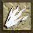
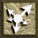
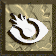

| ICONE | NOM | DESCRIPTION | COÛT DU LIVRE |
| Apocalypse | Transforme autour de vous tous ce qui bouge en un petit tas d'os. Selement disponible en parchemin |
N/A | |
| Blood Star | Les dommages que vous faites sont égals au 1/3 de votre magie. | 27500 | |
| Bone Spirit | Prend le 1/3 de l'énergie de votre enemie et vous le donne. (Très utile pour les enemie très fort.) | 12000 | |
| Chain Lightning | Plusieurs éclair s'envole autour de vous pour allez fraper les monstres el les carboniser sur place. | 11000 | |
| Charged Bolt | Plusieurs petits cercles d'énergie partent et courent après les enemies. Lorsque vous êtes un sorcier vous possedez ce sorts dans un staff en commencant. | 1000 | |
| Elemental | Un homme de feu apparait et fonce droit vers un enemie. | ????? | |
| Fire Ball | Un petit météorite pars vers l'enemie de votre choix et lui inflige beaucoup de dommage. | 8000 | |
| Fire Bolt | Beaucoup moin puissant que le sort Fire Ball mais il prend moin de mana. | 1000 | |
| Fire Wall | Crer un mur de feu qui bloque la plupart des monstres et qui carbonisent ceux qui se trouvaient à l'emplacement où le mur est apparût. | ???? | |
| Fire Wave | Comme Fire Wall sauf que le mur se déplace vers les enemies. | 10000 | |
| Flash | Touche les enemies autour de vous. | 7500 | |
| Golem | Un monstre surgit de la terre et va combatre les monstres autour de vous. | 18000 | |
| Guardian | Un dragon à trois têtes surgit de terre et attaque avec des boules de feu tous les monstres qui passe à proximité de lui. | 14000 | |
| Healing | Vous redonne de l'énergie | ???? | |
| Heal Other | Redonne de l'énergie à un personnage quand vous êtes en multijoueurs. | 1000 | |
| Holy Bolt | Lance une boule de feu bleu vers les mort-viavant, squelettes et autres. | 1000 | |
| Identify | Vous permet d'identifier des irtems non identifié. Pas de livre. | N/A | |
|  | Inferno | Transforme le sol en feu. | 2000 |
| Infravision | Vous voyer les monstres à travers les murs. Pas de livre. | N/A | |
| Lightning | Envoie un éclair vers un enemie. | 3000 | |
| Mana Shield | Vous donne un bouclier magique qui absorbe les coups des monstres. Au lieu de perdre de l'énergie, vous perdez du mana. Le bouclier est aussi fort que le niveau du sort. Exp. Sort de level 10 : -10 de dommage. | ???? | |
| Nova | Un cercle d'éclair part de vous et va carboniser les monstres autour de vous. | ???? | |
|  | Phasing | Vous téléporte à un endroit au hazard dans le niveau. Pratique lorsque vous voulez vous sauvez des monstres. | 3500 |
| Resurrect | Vous permet de résuciter des personnages qui sont morts lorques vous vous jouer en multijoueurs. Pas de livre. | N/A | |
| Stone Curse | Transforme les monstres en pierre. | 12000 | |
| Telekinesis | Vous permet de bouger des objet à distance. | 2500 | |
| Teleport | Vous teleporte à l'endroit où se trouve votre curseur. | 20000 | |
| Town Portal | Crer un Town Portal | 3000 |
| Recharges Staves | Vous permet de recharger les staffs | |
| Repair | Vous permet de réparer vos objets | |
| Disarm | Vous permet désamorcer les pièges |
1-
2-
3-
4-
5-
6-
7-il ne font rien envoie de Davis Valcourt
8-il ne font rien envoie de Davis Valcourt
9-
10-il ne font rien envoie de Davis Valcourt